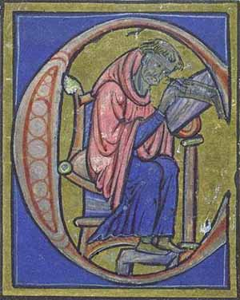

Petrus Lombardus
ca. 1095 - 1160
|
|
persona
Petrus Lombardus, theologus scholasticus et «magister sententiarum», natus est circa annum 1095 in civitate Novara (Lombardia). praeceptorem habuit Abaelardum, clarissimum theologum. Anno 1159 archiepiscopus Parisiensis consecratus obiit anno 1160.

opera
Commentarius in Psalmos (1135/37) >>> (Google) >>> (Manuscriptum Bambergiense) Collectanea in epistolas Pauli (1139/41) pars I >>> pars II >>> Glossa ordinaria ? (ca. 1150) Sententiarum libri IV (ca. 1155/58) editio Migne (1855) editio Coll. S. Bonaventurae Ad Claras Aquas (1971) Sermones
secundaria
Petrus Lombardus (Internet Encyclopedia of Philosophy) Petrus Lombardus (The Franciscan Archive) Petrus Lombardus (The Catholic Encyclopedia) Petrus Lombardus (Biographisch-Bibliographisches Kirchenlexikon) |